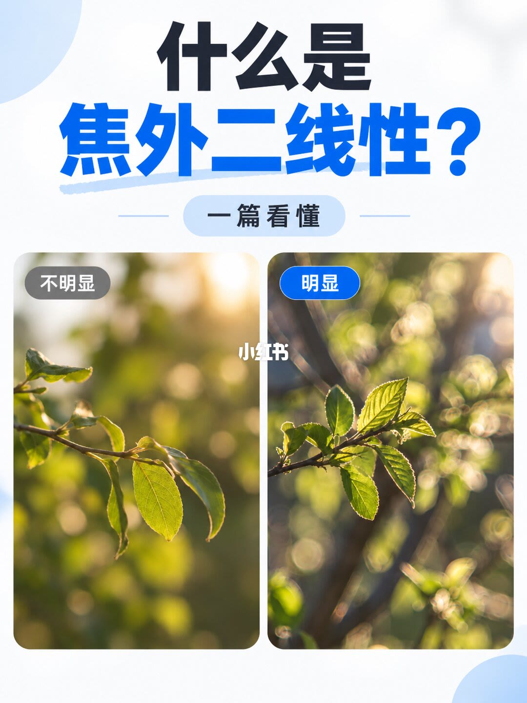
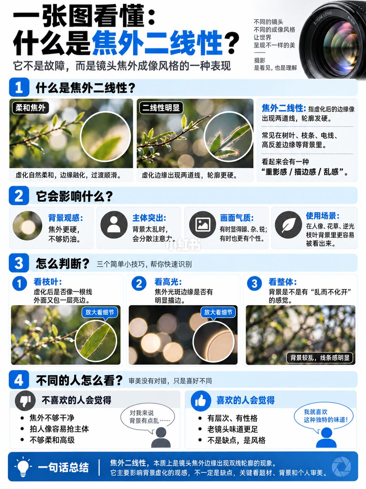
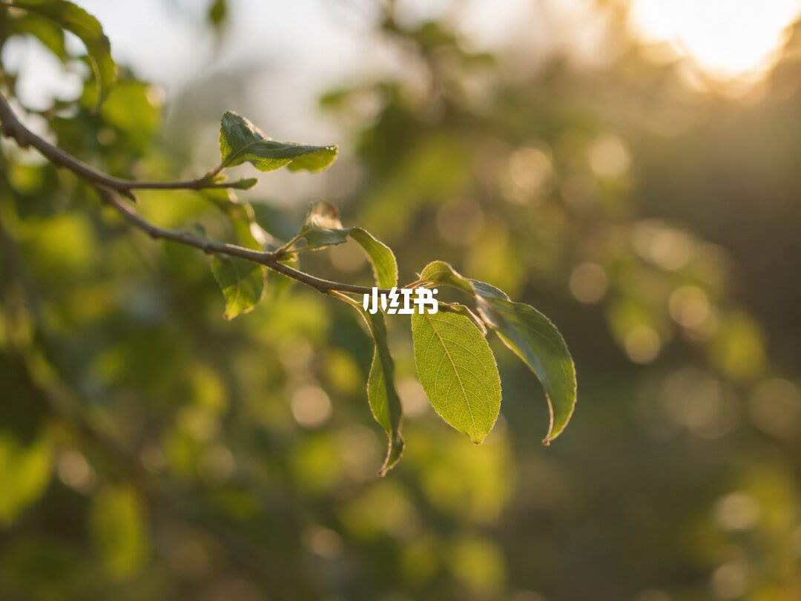
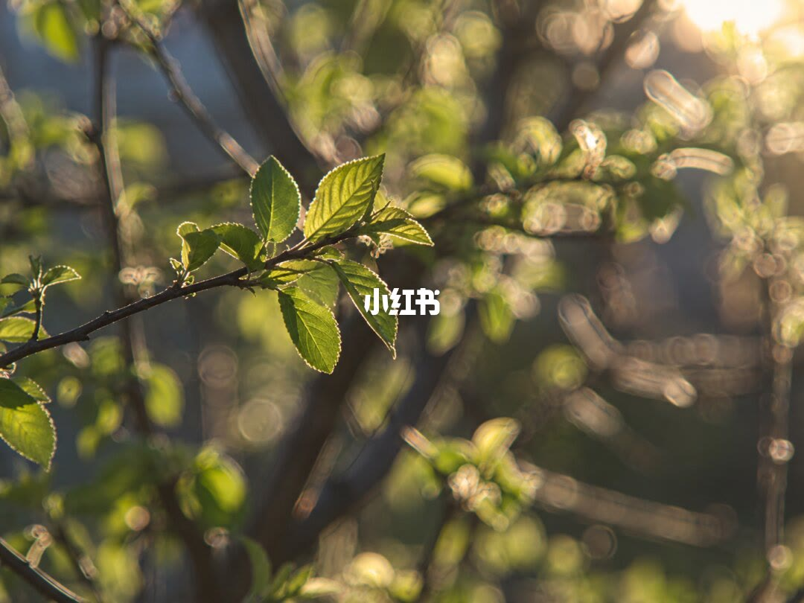

图文实录 · 小红书 · 奇恒数码
一张图看懂：什么是焦外二线性
焦外二线性是虚化边缘多出一条轮廓，不是镜头坏了。显不显眼，看叶子、光斑边和整片背景会不会化开。
1/4
不明显和明显并排
封面问「什么是焦外二线性」，中间一枚按钮写「一篇看懂」。左边标「不明显」：逆光叶子的光斑圆、边软，彼此融在一起。右边标「明显」：光斑外圈发亮，像套了一层圈，树枝和叶边能看见重影。这一页只给对照，没有定义。

2/4
定义、影响、判断和两种看法
副题写：不是故障，是镜头虚化成像的一种样子。柔和焦外是边缘融合、过渡顺；二线性明显是虚化边缘出现两条线，轮廓更硬。常见于叶子、树枝、电线和高反差边缘，看起来像描了边、发乱。
影响四条：背景不奶油；乱背景抢主体；画面可以显得冲、乱、硬，也可以被看成有性格；人像、花卉、逆光树枝最容易看出来。
判断三条：看叶子和树枝，虚线是不是一条芯外面再套一圈；看高光，光斑边缘有没有亮边；看整体，背景是不是乱、化不开。
反对的人觉得不干净、抢人像、缺少柔和的高级感。喜欢的人觉得有层次、有老镜头味道，把它当风格。页底一句：本质是虚化边缘出现双轮廓，主要影响背景观感，算不算缺点取决于题材、背景和个人审美。

3/4
一张没有标注的叶子
逆光的细枝和绿叶，背景是暖色光斑，正中只有「小红书」水印。画面没有「不明显」或「明显」的标签，不能从水印判断它属于哪一类。

4/4
另一张没有标注的叶子
同样是逆光绿叶和金色光斑，正中仍是水印。图上没有箭头指出双线，也没有镜头型号。

汇总
用第 2 页的三条去看，不要用后两页猜
第 1 页用光斑亮边区分不明显和明显。第 2 页把二线性定义成虚化边缘的双轮廓，并写明不是故障，喜不喜欢取决于题材。第 3、4 页是没有标签的样张，不能单独当成教材。没有镜头型号和光圈。